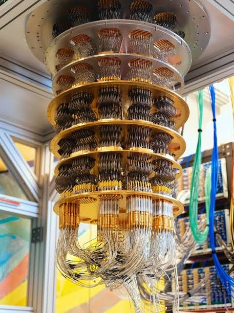
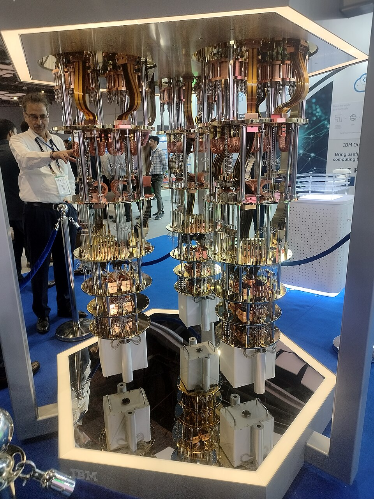
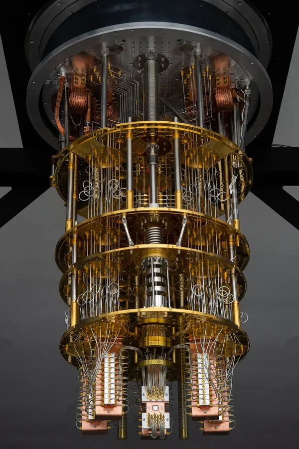

Kvantni računari
Šta su kvantni računari i zašto su nam potrebni?
Razvoj klasičnih računara decenijama je pratio brz napredak, ali su naučnici poput Ričarda Fajnmana još 1981. godine uočili da klasične mašine nailaze na takozvanu „eksponencijalnu barijeru” kada pokušavaju da simuliraju složene prirodne procese. Dodavanjem samo jednog novog elementa u sistem, složenost izračunavanja za klasični računar može značajno da poraste, zbog čega su neki problemi praktično nerešivi čak i za današnje superračunare. Kvantni računari nastaju sa idejom da umesto prilagođavanja prirode klasičnoj logici nula i jedinica, napravimo mašine koje direktno koriste zakone kvantne mehanike.



Osnovni principi rada: Kubiti, superpozicija i upletenost
Dok klasični računari koriste bitove koji mogu biti isključivo u stanju 0 ili 1, osnovna jedinica kvantnog računara je kubit. Takođe, umesto klasičnog procesora koji koristi logičke kapije zasnovane na zakonima Bulove algebre, kvantni računari koriste tzv. kvantnu procesorsku jedinicu (Quantum Processing Unit, QPU) i odgovarajuće kvantne logičke kapije koje su fizički realizovane kao nekakva operacija nad fizičkim sistemom u okviru kvantnog procesora, npr. laserskim impulsom gađamo jone, čime im menjamo energetsko stanje (promena stanja kubita). Ono što izdvaja kvantne računare u odnosu na klasične je implementacija 3 kvantna fenomena:
- Superpozicija
- Upletenost
- Interferencija
Zahvaljujući superpoziciji, kubit se može opisati kao kombinacija stanja 0 i 1 sve dok se ne izvrši merenje. U kombinaciji sa kvantnom interferencijom i upletenošću, superpozicija omogućava kvantnim algoritmima da obrađuju informacije na načine koji nemaju direktan ekvivalent u klasičnom računarstvu.
Pored superpozicije, ključni fenomeni su i upletenost i interferencija. Upletenost (entanglement) je osobina da više kubita postanu međusobno povezani tako da promena stanja jednog kubita trenutno utiče na ostale, što omogućava masovnu koordinaciju pri kompleksnim proračunima. S druge strane, pomoću interferencije dolazimo do tačnog rešenja tih proračuna - to je mehanizam koji pojačava verovatnoću tačnog odgovora (konstruktivna interferencija) i poništava amplitude netačnih rezultata (destruktivna interferencija), čime računar na kraju merenja sa visokom sigurnošću daje tačno rešenje.
Gde kvantni računari prave razliku?
Kvantni računari nisu napravljeni da zamene klasične računare za svakodnevne zadatke, već da rešavaju specifične, izuzetno teške probleme kao što su:
- Kriptografija i sajber bezbednost: Algoritmi poput Šorovog omogućavaju brzu faktorizaciju velikih brojeva, što ugrožava današnju RSA enkripciju i podstiče razvoj novih pristupa u enkripciji i sajber bezbednosti uopšte.
- Simulacija prirode i farmacija: Omogućava precizno proučavanje hemijskih reakcija i molekula na atomskom nivou, što može dovesti do revolucije u otkrivanju novih lekova i materijala.
- Pretraga i optimizacija: Groverov algoritam značajno ubrzava pretragu nestrukturiranih baza podataka, dok kvantni algoritmi mogu ponuditi ubrzanja za određene probleme optimizacije, što ih čini potencijalno korisnim u logistici, raspoređivanju i industrijskom planiranju.
U nastavku je data tabela koja demonstrira razliku u vremenskoj složenosti klasičnih i kvantnih računara.
| Problem / Algoritam | Klasični računar | Kvantni računar |
|---|---|---|
| Faktorizacija brojeva (Šorov algoritam) |
Subeksponencijalno O(en1/3) |
Polinomijalno O(n3) |
| Pretraga baze podataka (Groverov algoritam) |
Linearno O(N) |
Kvadratni koren O(√N) |
| Simulacija kvantnih sistema |
Eksponencijalno O(2n) |
Polinomijalno O(poly(n)) |
| Diskretni logaritam |
Eksponencijalno O(en1/3) |
Polinomijalno O(n2 log n) |
Trenutni izazovi i budućnost
Danas se nalazimo u takozvanoj NISQ eri (Noisy Intermediate-Scale Quantum), koju karakterišu kvantni računari sa desetinama, stotinama, a kod nekih sistema i više od hiljadu kubita, ali sa značajnim nivoom šuma i grešaka. Pored toga, neke od najzastupljenijih tehnologija, poput superprovodničkih kubita, zahtevaju ekstremno hlađenje na temperaturama od svega nekoliko desetina milikelvina iznad apsolutne nule.
Budućnost verovatno ne pripada potpunoj zameni klasičnih računara, već njihovoj hibridnoj sprezi, u kojoj bi klasični računari koristili kvantne procesore kao specijalizovane akceleratore za određene složene matematičke i naučne probleme.